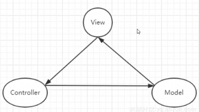

前言
既然我们是用于UI，那么我们所讨论的即"前端"的
简单讲述一下它们的历史：
- 最早以前(web1.0)，前后端并没有分离，可以想象最原始的做法就是杂糅在一起做，但是难以维护，所以推出了后端MVC
(前端V，后端M/C，所以我称为前后端MVC) - MVC虽然分层清晰，但是可能不够灵活，也可能数据流混乱/V庞大C单薄，依旧导致维护问题，所以推出了后端MVP
- MVP解决了耦合问题，但这从而导致了P的臃肿，依旧存在维护问题，所以推出了MVVM(前后端通用)
- MVVM是一开始提出的MVC的最终演化版
简述
一般来说，我们可能听到最多的就是MVC，MVVM与MVP可能较少，但是从缩写上我们就能看出，它们具有共同点：M与V
三者都是
MVC
- Model：管理数据
- View：负责UI显示
- Controller：处理用户输入，更新Model，并通知View刷新
大致流程为：
用户输入，此时Controller响应(更新Model，通知View)，最终View收到回调进行更新 

可以看到MVC是一种很
多变 的框架，如上图所示：- MVC可以是简单的一组单向链
- MVC也可以添加各个链
但是各有各的缺点：
- 单向链逻辑清晰，但是不够灵活
- 多向链数据流混乱
- 两者内容集中在V中，C非常单薄(基本上就是个"绑定触发器")
MVP
("MVC2.0") - Model：同MVC，管理数据
- View：仅负责显示(通过接口与Presenter交互)
- Presenter：处理所有业务逻辑，更新Model并控制View
大致流程为：
用户输入，此时Presenter进行操作处理(更新Model，调用View接口) 
看图就能理解，这其实是将C的职责更加明确的形式，一切都走P，M和V不能私自沟通
但是这也很容易发现缺点：都走P那么P自然很重 MVVM
("MVC3.0") - Model：管理数据
- View：绑定ViewModel的数据，自动更新
- ViewModel：暴露数据属性和命令(绑定到View)
大致流程为：
用户输入，此时ViewModel存在某绑定数据(与View)的操作，使得Model更新，View自动更新(数据驱动) 
可以发现其思路与MVP是类似的，但是极其有利的一点在于：
数据驱动可以使VM的改变自动体现在V上，简单来说就是我们可以少一步
所以说可以认为MVVM是MVP的绑定版
从上述描述中，我们能看出细微的差别：
- MVC比较
纯净 - MVP中
P作为MV的唯一沟通方式 - MVVM使用了
数据驱动
分析
根据前面的简述，我们其实可以知道：
- 三者都是UI框架，用于使结构更加清晰
- MVC是初版框架，后来推出了MVP以及MVVM迭代
所以说到底我们可以认为三者是同一种框架，只是多使用了一些额外思想
三者的核心：
大致含义就是：有数据要显示在界面上，为了能够将
MVC
MVC即基础版，它有很多变体，但是万变不离其宗，核心就是：
我认为最传统的一种方式是这样的：
public class MVC2_Main : MonoBehaviour
{
private void Start()
{
HPModel model = new HPModel(100);
HPView view = new HPView();
HPController controller = new HPController(view, model);
view.Init(controller);//延迟Init
controller.UpdateView();//初次初始化
}
}
作为一个框架，入口(即MVC2_Main.cs)还是需要有的，然后在其中进行对MVC的初始化即可
更核心的即内部逻辑关系，大概有：
M提供数据，并提供用于更改数据的函数V提供视图控件，如text提供更改函数，如btn进行绑定C对MV进行封装，封装的函数会用于绑定btn或直接调用
可以发现总的来说还是非常清晰的框架
传统版问题：
对于V与C来说是V来解决这一问题，相互引用必然是不好的一件事
变体点：
M可以添加回调事件优化V更新机制public event Action<int> OnHPChanged;
这样的话多了绑定，但是在执行函数时会自动触发V更新- 添加单例
是否添加具体要单例基于实际情况判断：存在多实例情况
对于HPModel来说，实际上是不应该使用单例的，因为无论是敌人还是主角，只要是一个实体都需要有属于自己的HPModel
而对于ConfigModel，则只可能存在一份需要单元测试
V/C使用MonoBehaviourC使用的话相当于优化掉了MVC2_Main.cs，文件更少但是相对逻辑不够清晰V使用的话控件获取有更简单的方式
主要的话就是具有了Unity生命周期，在某些方面自然会更简单，如：- 绑定很轻松(Start绑定，OnDestroy解绑)
CV同时使用V可直接获取C，C也可直接获取V
相对的，在CV同时使用会需要挂载2个组件，而且挂载CV逻辑上没有Main合理
MVP
MVP在MVC的基础上更新了职能分配：P作为唯一中间件建立M V之间的联系
以下P代码即MVP的核心：
public class HPPresenter
{
private HPModel _hpModel;
private HPView _hpView;
public HPPresenter(HPModel model, HPView view)
{
_hpModel = model;
_hpView = view;
_hpView._btnAttack.onClick.AddListener(() =>
{
_hpModel.TakeDamage(10);
_hpView.UpdateHPDisplay(_hpModel.CurrentHP, _hpModel.MaxHP);
});
_hpView._btnHeal.onClick.AddListener(() =>
{
_hpModel.Heal(10);
_hpView.UpdateHPDisplay(_hpModel.CurrentHP, _hpModel.MaxHP);
});
}
public void UpdateView()
{
_hpView.UpdateHPDisplay(_hpModel.CurrentHP, _hpModel.MaxHP);
}
}
可以看到区别有且只有将绑定转移到了P中，但是带来的效果是显而易见的：
互相引用情况消失了，而且管理逻辑非常清晰
但是带来的后果就是P需要负责所有内容，可以看到无论是M的函数还是V的函数，这里基本都需要重复封装或调用，
MVVM
MVVM又在MVP的基础上添加了绑定，绑定有2组：
M与VM的绑定，M的数据被拷贝了一份到VM上进行操作，两者进行双向绑定V与VM的绑定，其实指的就是数据驱动(数据一旦改变，进行回调以更新视图)
与MVP一样，代码其实还是集中在VM上：
public class HPViewModel
{
private HPModel _hpModel;
private HPView _hpView;
public BindableProperty<int> CurrentHP = new BindableProperty<int>();
public BindableProperty<int> MaxHP = new BindableProperty<int>();
public HPViewModel(HPModel model, HPView view)
{
_hpModel = model;
_hpView = view;
//M<--->VM
_hpModel.OnHPChanged += OnHPChanged;
//VM<--->V
CurrentHP.OnValueChanged += UpdateView;
_hpView.OnAttackClicked += () => _hpModel.TakeDamage(10);
_hpView.OnHealClicked += () => _hpModel.Heal(10);
MaxHP.Value = _hpModel.MaxHP;
CurrentHP.Value = _hpModel.CurrentHP;
}
public void Exit()
{
_hpModel.OnHPChanged -= OnHPChanged;
CurrentHP.OnValueChanged -= UpdateView;
}
private void UpdateView(int hp)
{
_hpView.UpdateHPDisplay(hp, MaxHP.Value);
}
private void OnHPChanged(int hp)
{
CurrentHP.Value = hp;
}
}
可以发现一个很大的区别就是：
可以发现绑定的机制是非常精妙的：
- btn以更新M数据，M绑定后又可更新VM数据，从而M与VM的双向绑定
- VM数据一旦更新，由于VM绑定的原因又可自动更新V，从而实现VM与V的双向绑定
所以MVVM做到了触发后M/VM/V三者同时自动更新的优点
变体点：
- btn绑定可以在
VM中进行(上述事件方式)，也可以使用命令模式直接转移至V中
观察下方代码会发现区别极小，只是一点细节差别
//方式1：在VM中注册注册回调，在V中绑定
//VM---注册
_hpView.OnAttackClicked += () => _hpModel.TakeDamage(10);
_hpView.OnHealClicked += () => _hpModel.Heal(10);
//V---绑定
_btnAttack.onClick.AddListener(() => OnAttackClicked?.Invoke());
_btnHeal.onClick.AddListener(()=> OnHealClicked?.Invoke());
//方式2：在VM中提供命令，在V中绑定
//VM---编写命令
AttackCommand = new BindableCommand(() => TakeDamage(10));
HealCommand = new BindableCommand(() => Heal(10));
//V---绑定
_btnAttack.onClick.AddListener(() => { _hpViewModel.AttackCommand.Execute(); });
_btnHeal.onClick.AddListener(() => { _hpViewModel.HealCommand.Execute(); });
区别
根据前面的分析，可以得知三者的差距不大，只是代码位置或设计模式的区别：
- 三者的内容点是完全相同的：
有M有V，C/P/VM用来沟通 - MVC较随意，MVP中P具有严格的中间件职责，MVVM额外进行绑定
问题：BindableProperty
在MVVM的绑定中，BindableProperty起到了非常重要的作用，代码如下：
public class BindableProperty<T>
{
private T _value;
public T Value
{
get => _value;
set
{
if (!Equals(_value, value))
{
_value = value;
OnValueChanged?.Invoke(value);
}
}
}
public Action<T> OnValueChanged;
}
可以看到经典的组合：私有字段+公开属性
该类型在此基础上
该类型很重要，也是MVVM相对MVC/MVP的核心改动，我们可以注意到一个结论：
BindableProperty字段其实是Model字段的一个拷贝
这也是双侧双向绑定的关键：- Model字段的事件回调把
M与VM联系了起来(M字段通知VM字段更新) - BindableProperty字段的事件回调把
VM与V联系了起来(VM字段通知更新V视图)
- Model字段的事件回调把
问题：BindableCommand
根据前面所述，命令模式是一种很好的代码位置转换的工具，代码如下：
//Tip：同时存在泛型版本BindableCommand<T>(实现一致)
public class BindableCommand : IDisposable
{
private readonly Action _execute;
private readonly Func<bool> _canExecute;
public event Action OnCanExecuteChanged;
public BindableCommand(Action execute, Func<bool> canExecute = null)
{
_execute = execute;
_canExecute = canExecute;
}
public bool CanExecute() => _canExecute?.Invoke() ?? true;
public void Execute() => _execute?.Invoke();
/// <summary>
/// 通知UI刷新(注意：仅刷新，需在UI侧调用CanExecute()判断是否可刷新)
/// </summary>
public void RaiseCanExecuteChanged() => OnCanExecuteChanged?.Invoke();
public void Dispose() => OnCanExecuteChanged = null;
}
代码逻辑十分清晰：
- 需要执行命令时调用
Execute() - 需要更新UI时先调用
CanExecute()判断是否可调用，然后调用RaiseCanExecuteChanged()